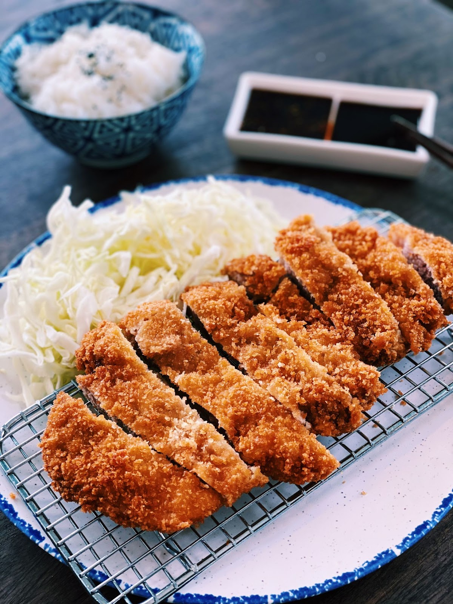

Tonkatsu

Description
Tonkatsu is a more traditional Japanese dish. A fried pork cutlet in the style of Japanese frying. Typically you eat this with a side of rice or cabbage and some tonkatsu sauce
Ingredients
- 4 bonless pork chops
- salt and pepper, to taste
- 1 cup flour
- 1 large egg
- a splash of milk
- 1/2 cup panko breadcrumbs
- canola/peanut oil for frying
Steps
- Season the pork chops with salt and pepper.
- Have 3 shallow dishes or bowls. Place flour in one. The egg beaten with a splash of milk in another. With the last holding the panko breadcrumbs.
- coat and dredge the pork through the flour. Dip into the egg mixture. Lastly coat the chops in the panko crumbs.
- (Optional) Place the now covered chops in a refridgerated area for 30 minutes.
- In a deep pan heat your frying oil with medium high heat.
- Fry the pork for 6 minutes or until browned.
- Place finished pork on paper towels to drain oil off pork.